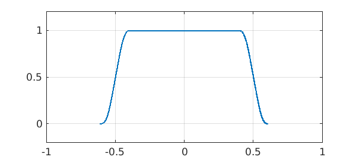
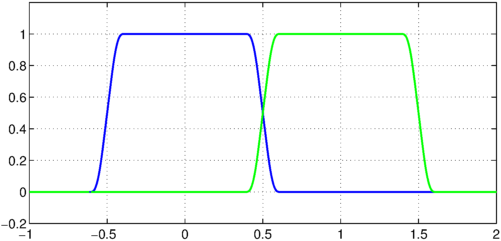
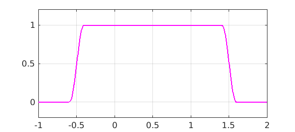

How do you make a smooth function with compact support? Ben Green tells me his favorite method is as follows. Given $h>0$, consider a square wave of width $h$ and height $1/h$:
p = @(h) chebfun(1/h,[-h/2 h/2]);
Now convolve a few of these together with diminishing values of $h$, like this:
f = p(1); for k = 3:5 f = conv(f,p(2^-k)); end LW = 'linewidth'; plot(f,LW,1.6), grid on axis([-1 1 -.2 1.2])

This function was constructed from three convolutions, so it will be of class $C^2$, with integral equal to 1:
sum(f)
ans =
1
By taking more and more terms, we can have any finite degree of smoothness, and an infinite convolution gives us a function in $C^\infty$. It will have compact support if the sum of the values of $h$ is finite.
This gives a nice way to construct partitions of unity. For example, here is the function above padded by zero values to the interval $[-1,2]$, and the same function shifted one unit to the right:
[a,b] = domain(f);
f1 = chebfun({0, f, 0},[-1 a b 2]);
f2 = chebfun({0, newDomain(f,[a+1,b+1]), 0}, [-1 a+1 b+1 2]);
plot(f1,'b',f2,'g',LW,1.6), grid on, axis([-1 2 -.2 1.2])

Adding up such functions gives us unity:
g = f1 + f2; plot(g,'m',LW,1.6), grid on, axis([-1 2 -.2 1.2])

Constructions like this (both finite and infinite convolutions) have various applications, and among other things they are related to the Denjoy-Carleman theorem [1,2].
References
-
P. J. Cohen, A simple proof of the Denjoy-Carleman theorem, American Mathematical Monthly, 75 (1968), 26-31.
-
Y. Katznelson, An Introduction to Harmonic Analysis, Dover, 1976.